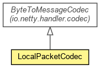

org.waarp.openr66.protocol.localhandler.packet
Class LocalPacketCodec
java.lang.Object
 org.jboss.netty.channel.SimpleChannelUpstreamHandler
org.jboss.netty.handler.codec.frame.FrameDecoder
org.waarp.openr66.protocol.localhandler.packet.LocalPacketCodec
org.jboss.netty.channel.SimpleChannelUpstreamHandler
org.jboss.netty.handler.codec.frame.FrameDecoder
org.waarp.openr66.protocol.localhandler.packet.LocalPacketCodec
- All Implemented Interfaces:
- ChannelDownstreamHandler, ChannelHandler, ChannelUpstreamHandler, LifeCycleAwareChannelHandler
public class LocalPacketCodec
- extends FrameDecoder
- implements ChannelDownstreamHandler

Local Packet Decoder
- Author:
- Frederic Bregier
| Methods inherited from class org.jboss.netty.handler.codec.frame.FrameDecoder |
actualReadableBytes, afterAdd, afterRemove, appendToCumulation, beforeAdd, beforeRemove, channelClosed, channelDisconnected, cleanup, decodeLast, exceptionCaught, getMaxCumulationBufferCapacity, getMaxCumulationBufferComponents, internalBuffer, isUnfold, messageReceived, newCumulationBuffer, replace, setMaxCumulationBufferCapacity, setMaxCumulationBufferComponents, setUnfold, unfoldAndFireMessageReceived, updateCumulation |
| Methods inherited from class java.lang.Object |
clone, equals, finalize, getClass, hashCode, notify, notifyAll, toString, wait, wait, wait |
LocalPacketCodec
public LocalPacketCodec()
decode
protected Object decode(ChannelHandlerContext ctx,
Channel channel,
ChannelBuffer buf)
throws Exception
- Specified by:
decode in class FrameDecoder
- Throws:
Exception
decodeNetworkPacket
public static AbstractLocalPacket decodeNetworkPacket(ChannelBuffer buf)
throws OpenR66ProtocolPacketException
- Throws:
OpenR66ProtocolPacketException
handleDownstream
public void handleDownstream(ChannelHandlerContext ctx,
ChannelEvent e)
throws Exception
- Specified by:
handleDownstream in interface ChannelDownstreamHandler
- Throws:
Exception
Copyright © 2009-2012 Waarp. All Rights Reserved.